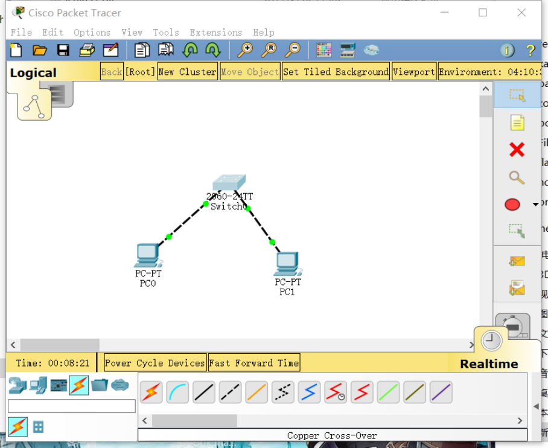
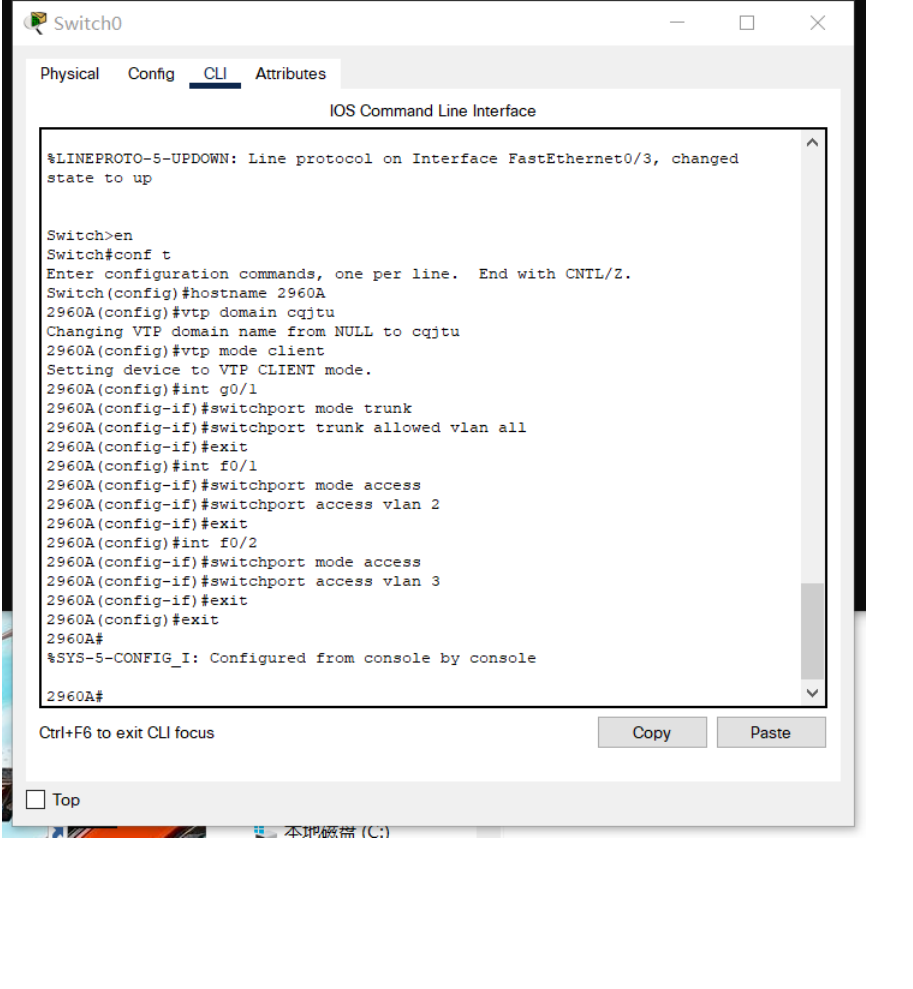
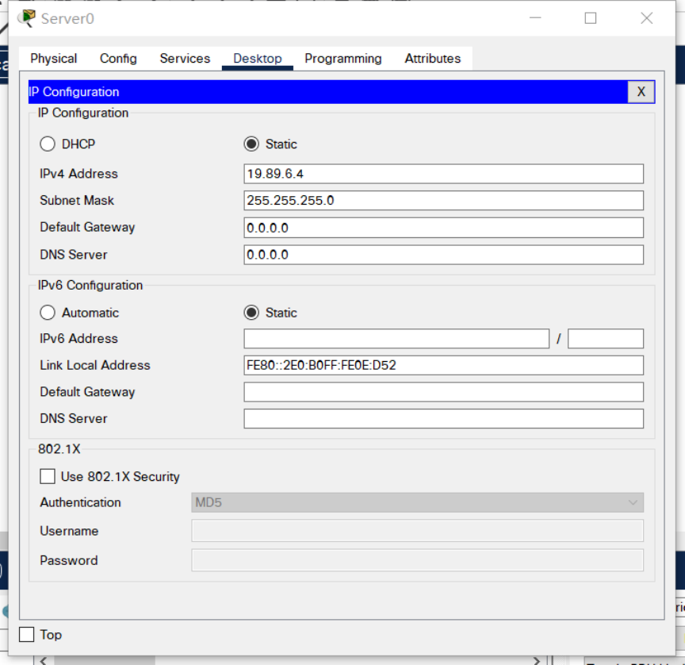

重庆交通大学信息科学与工程学院
实 验 报 告
班 级： 曙光 1901 班
姓名 学号： 樊宇杰 631907060603
实验项目名称： 计算机网络 Cisco Packet Tracer 实验
实验项目性质： 验证性
实验所属课程： 计算机网络
实验室(中心)： 计算中心三机房
指 导 教 师 ： 王勇
实验完成时间： 2020 年 12 月 15 日
- 1 -
一、实验概述：
【实验目的】
1. 了解 CPT 软件使用
2. 掌握 VLSM、CIDR、RIP、OSPF、VLAN、STP、NAT 及 DHCP 等概念，以能够
进行网络规划和配置。
3. 掌握
【实施环境】（使用的材料、设备、软件）
Windows 操作系统环境
二、实验内容
第 1 题 CPT 软件使用简介
【实验过程】（步骤、记录、数据、程序等）
第 2 题 直接连接两台 PC 构建 LAN
【实验过程】（步骤、记录、数据、程序等）
选择一个交换机和两个终端设备
选择交叉线
- 2 -
连接

- 3 -
0 号主机和 1 号主机 ip 设置
- 4 -
- 5 -
0 号主机 ping1 号主机

- 6 -
1 号主机 ping0 号主机
- 7 -
第 3 题 用交换机构建 LAN
【实验过程】（步骤、记录、数据、程序等）
- 8 -
✎ 问题
PC0 能否 ping 通 PC1、PC2、PC3 ？
- 9 -
Pc1 能 ping 通 而 pc2,pc3 不能 ping 通
PC3 能否 ping 通 PC0、PC1、PC2 ？为什么？
Pc2 能 ping 通,pc0,pc1 不能 pc3 与 pc2 网络号相同,与 pc0 pc1 的网络号不相同,
不是同一个子网
将 4 台 PC 的掩码都改为 255.255.0.0 ，它们相互能 ping 通吗？为什么？
能相互 ping 通 因为最顶层是三层交换机,含有路由功能,255.255.0.0 为掩码时
4 台 pc 的网络号都相同 192.168.0.0 /16
使用二层交换机连接的网络需要配置网关吗？为什么？
不需要
交换机接口地址列表
- 10 -
第 4 题 生成树协议（Spanning Tree Protocol）
【实验过程】（步骤、记录、数据、程序等）
- 11 -
- 12 -
选取 switch2 为根
- 13 -
第 5 题 路由器配置初步
【实验过程】（步骤、记录、数据、程序等）
- 14 -
加入 wic 2t 模块
- 15 -
配置路由器后
第 6 题 静态路由
【实验过程】（步骤、记录、数据、程序等）
交通大学路由器静态路由配置：
Router>en // 从普通模式进入特权模式
Router#conf t // 进入全局配置模式
Router(config)#ip route 192.168.3.0 255.255.255.0 192.168.2.2 // 告诉交通大学路由器到 192.168.3.0 这个网络的下一跳是
192.168.2.2
Router(config)#exit //退到特权模式
Router#show ip route //查看路由表
- 16 -
重庆大学路由器静态路由配置：
Router>en // 从普通模式进入特权模式
Router#conf t // 进入全局配置模式
Router(config)#ip route 192.168.1.0 255.255.255.0 192.168.2.1 // 告诉重庆大学路由器到 192.168.1.0 这个网络的下一跳是
192.168.2.1
Router(config)#exit //退到特权模式
Router#show ip route //查看路由表
- 17 -
我们的拓扑只模拟了 3 个网络。在现实中，路由器连接的网络数量非常多，我们还需
要配置一条缺省路由，否则其它网络皆不能到达！当然，我们的拓扑可以不考虑。
Router(config)#ip route 0.0.0.0 0.0.0.0 *.*.*.* // 缺省全部转发给 *.*.*.* 这个 IP
第 7 题 动态路由 RIP
【实验过程】（步骤、记录、数据、程序等）
清除静态路由配置：
- 18 -
1. 直接关闭路由器电源。相当于没有保存任何配置，然后各接口再按照前面基本配
置所述重新配置 IP 等参数（推荐此方法，可以再熟悉一下接口的配置命令）；
2. 使用 no 命令清除静态路由。在全局配置模式下，交通大学路由器使用：no ip
route 192.168.3.0 255.255.255.0 192.168.2.2，重庆大学路由器使用：no ip route
192.168.1.0 255.255.255.0 192.168.2.1 。相当于使用 no 命令把刚才配置的静
态路由命令给取消。
这里选择第二种方法
交通大学路由器 RIP 路由配置：
Router>en // 从普通模式进入特权模式
- 19 -
Router#conf t // 进入全局配置模式
Router(config)#router rip // 启用 RIP 路由协议，注意是 router 命令
Router(config-router)#network 192.168.1.0 // 网络 192.168.1.0 与我直连
Router(config-router)#network 192.168.2.0 // 网络 192.168.2.0 与我直连
Router(config-router)#^z //直接退到特权模式
Router#show ip route //查看路由表
重庆大学路由器 RIP 路由配置：
Router>en // 从普通模式进入特权模式
Router#conf t // 进入全局配置模式
Router(config)#router rip // 启用 RIP 路由协议，注意是 router 命令
Router(config-router)#network 192.168.3.0 // 网络 192.168.3.0 与我直连
Router(config-router)#network 192.168.2.0 // 网络 192.168.2.0 与我直连
Router(config-router)#^z //直接退到特权模式
Router#show ip route //查看路由表
第 8 题 动态路由 OSPF
【实验过程】（步骤、记录、数据、程序等）
- 20 -
使用 no 命令清除 RIP 路由。在全局配置模式下，各路由器都使用：no router rip 命令
进行清除
交通大学路由器 OSPF 路由配置：
Router>en // 从普通模式进入特权模式
Router#conf t // 进入全局配置模式
Router(config)#router ospf 1 // 启用 OSPF 路由协议，进程号为 1（可暂不理会进程号概念）
Router(config-router)#network 192.168.1.0 0.0.0.255 area 0 // 自治域 0 中的属于 192.168.1.0/24 网络的所有主机（反向掩码）
参与 OSPF
Router(config-router)#network 192.168.2.0 0.0.0.255 area 0 // 自治域 0 中的属于 192.168.2.0/24 网络的所有主机（反向掩码）
参与 OSPF
Router(config-router)#^z //直接退到特权模式
Router#show ip route //查看路由表
重庆大学路由器 OSPF 路由配置：
Router>en // 从普通模式进入特权模式
Router#conf t // 进入全局配置模式
Router(config)#router ospf 1 // 启用 OSPF 路由协议，进程号为 1
Router(config-router)#network 192.168.3.0 0.0.0.255 area 0 // 自治域 0 中的属于 192.168.3.0/24 网络的所有主机（反向掩码）
参与 OSPF
Router(config-router)#network 192.168.2.0 0.0.0.255 area 0 // 自治域 0 中的属于 192.168.2.0/24 网络的所有主机（反向掩码）
参与 OSPF
Router(config-router)#^z //直接退到特权模式
Router#show ip route //查看路由表
- 21 -
第 9 题 基于端口的网络地址翻译 PAT
【实验过程】（步骤、记录、数据、程序等）
我们仍然使用重庆交通大学和重庆大学两个学校的拓扑进行 PAT 实验。我们需要保证
两个学校的路由已经配置成功，无论使用静态路由还是动态路由，以下我们给出完整的
配置过程：设定这两个学校的路由器使用 OSPF 协议，模拟交通大学使用内部 IP 地
址（192.168.1.0/24），模拟重庆大学使用外部 IP 地址（8.8.8.0/24），两个路由器之
间使用外部 IP 地址（202.202.240.0/24），在交通大学的出口位置即广域网口实施 PAT。
拓扑图中各 PC 配置数据如下：
节点名
IP
子网掩码
网关
交通大学 PC0
192.168.1.2
255.255.255.0
192.168.1.1
交通大学 PC1
192.168.1.3
255.255.255.0
192.168.1.1
重庆大学 PC2
8.8.8.2
255.255.255.0
8.8.8.1
重庆大学 PC3
8.8.8.3
255.255.255.0
8.8.8.1
交通大学路由器接口配置如下：
以太网口：
Router>en // 从普通模式进入特权模式
Router#conf t // 进入全局配置模式
Router(config)#int f0/0 // 进入配置以太网口模式
- 22 -
Router(config-if)#ip address 192.168.1.1 255.255.255.0 // 配置 IP
Router(config-if)#no shutdown // 激活接口
广域网口：
Router>en // 从普通模式进入特权模式
Router#conf t // 进入全局配置模式
Router(config)#int s0/0 // 进入配置广域网口模式
Router(config-if)#ip address 202.202.240.1 255.255.255.0 //配置 IP
Router(config-if)#clock rate 64000 // 其为 DCE 端，配置时钟频率
Router(config-if)#no shutdown // 激活接口
重庆大学路由器接口配置如下：
以太网口：
Router>en // 从普通模式进入特权模式
Router#conf t // 进入全局配置模式
Router(config)#int f0/0 // 进入配置以太网口模式
Router(config-if)#ip address 8.8.8.1 255.255.255.0 // 配置 IP
Router(config-if)#no shutdown // 激活接口
广域网口：
Router>en // 从普通模式进入特权模式
Router#conf t // 进入全局配置模式
Router(config)#int s0/0 // 进入配置广域网口模式
Router(config-if)#ip address 202.202.240.2 255.255.255.0 // 配置 IP
Router(config-if)#no shutdown // 激活接口
交通大学路由器 OSPF 路由配置：
Router>en // 从普通模式进入特权模式
Router#conf t // 进入全局配置模式
Router(config)#router ospf 1 // 启用 OSPF 路由协议，进程号为 1（可暂不理会进程号概念）
Router(config-router)#network 192.168.1.0 0.0.0.255 area 0 // 自治域 0 中的属于 192.168.1.0/24 网络的所有主机（反向掩码）
参与 OSPF
Router(config-router)#network 202.202.240.0 0.0.0.255 area 0 /
Ping
- 23 -
下面我们将重庆大学的路由器看着 Internet 中的骨干路由器，那么这些路由器将不会转发内部/私有
IP 地址的包（直接丢弃）。我们通过在重庆大学路由器上实施访问控制 ACL ，即丢弃来自交通大
学（私有 IP 地址）的包来模拟这个丢包的过程。
重庆大学路由器丢包的配置：
Router>en // 从普通模式进入特权模式
Router#conf t // 进入全局配置模式
Router(config)#access-list 1 deny 192.168.1.0 0.0.0.255 // 创建 ACL 1，丢弃/不转发来自 192.168.1.0/24 网络的所有包
Router(config)#access-list 1 permit any // 添加 ACL 1 的规则，转发其它所有网络的包
- 24 -
Router(config)#int s0/0 // 配置广域网口
Router(config-if)#ip access-group 1 in // 在广域网口上对进来的包实施 ACL 1 中的规则，实际就是广域网口如果收到来自
192.168.1.0/24 IP 的包即丢弃
此时，再使用交通大学内部的 PC0（192.168.1.2）来 ping 重庆大学的 PC2（8.8.8.2）
就不成功了，会显示目的主机不可到达（Destination host unreachable）信息。
下面，我们就开始实施 PAT。即：我们将会在交通大学路由器的出口上将内部/私有 IP
地址转换为外部/公开 IP，从而包的源 IP 发生了改变，就不会被重庆大学路由器丢弃，
因此网络连通。
交通大学路由器 PAT 配置：
- 25 -
现在，再次使用交通大学内部的 PC0（192.168.1.2）来 ping 重庆大学的 PC2（8.8.8.2）则 OK
- 26 -
show ip nat translations
第 10 题 虚拟局域网 VLAN
【实验过程】（步骤、记录、数据、程序等）
VLAN（Virtual Local Area Network）即虚拟局域网。通过划分 VLAN，我们可以把一
个物理网络划分为多个逻辑网段即多个子网。
划分 VLAN 后可以杜绝网络广播风暴，增强网络的安全性，便于进行统一管理等。
在 CPT 中构建如下图所示拓扑：
- 27 -
交换机 VLAN 配置：
- 28 -
Pc0 ping pc1
- 29 -
Pc0 ping pc6
分析一下当前为何不同 VLAN 中的 PC 不能通信？网关在此起什么作用？我们的网关又在何处？
如何发起广播测试？
VLAN 具有分割网络的作用，因此不能通信
不同的网段之间需要通信一定需要网关
若是要发起广播测试，那么就要引入三层设备
第 11 题 虚拟局域网管理 VTP
【实验过程】（步骤、记录、数据、程序等）
前一个实验我们在交换机上进行了 VLAN 的规划和划分。但在实际应用中，我们绝不
允许在这些支持 VLAN 的交换机上进行随意的 VLAN 划分，如此将造成管理混乱！
VLAN 的划分必须得到统一的规划和管理，这就需要 VTP 协议。
VTP（VLAN Trunk Protocol）即 VLAN 中继协议。VTP 通过 ISL 帧或 Cisco 私有 DTP
帧（可查阅相关资料了解）保持 VLAN 配置统一性，也被称为虚拟局域网干道协议，
它是思科私有协议。 VTP 统一管理、增加、删除、调整 VLAN，自动地将信息向网络
中其它的交换机广播。
- 30 -
此外，VTP 减小了那些可能导致安全问题的配置，只要在 VTP Server 做相应设置，VTP
Client 会自动学习 VTP Server 上的 VLAN 信息。
为演示 VTP，重新构建如下拓扑结构：
3560 VTP Server 配置：

- 31 -
2960A（左边） VTP Client 配置：

- 32 -
2960B（右边） VTP Client 配置：
- 33 -
各 PC 连接的交换机和接口以及网络配置如下：
机器名
连接的交换机和接口
所属 VLAN
IP
子网掩码
网关
PC0
2960A-F0/1
VLAN 2
192.168.1.2
255.255.255.0
192.168.1.1
PC1
2960A-F0/2
VLAN 3
192.168.2.2
255.255.255.0
192.168.2.1
PC2
2960B-F0/1
VLAN 2
192.168.1.3
255.255.255.0
192.168.1.1
PC3
2960B-F0/2
VLAN 3
192.168.2.3
255.255.255.0
192.168.2.1
至此，VTP 配置完成。同 VLAN 可以 ping 通，而不同 VLAN 不行（即使在同一交换机下，如从 PC0 到 PC1），且能够方
便的统一规划和管理。
使用 show vlan 命令查看 VLAN 状态：
- 34 -
- 35 -
- 36 -
✎ 试一试
使用 PC0（192.168.1.2） ping PC1（192.168.2.2） 的结果如何？使用 PC0 ping PC2 的结果
如何？想想为什么？
(1)
- 37 -
(2)
pc0 和 pc1 不处于同一个 vlan;pc0 和 pc2 处于同一个 vlan;
- 38 -
第 12 题 VLAN 间的通信
【实验过程】（步骤、记录、数据、程序等）
VTP 只是给我们划分和管理 VLAN 提供了方便，由上面的测试得知，目前我们仍然不
能在 VLAN 间通信。
因为默认的，VLAN 间是不允许进行通信，此时我们需要所谓的独臂路由器在 VLAN
间为其进行转发！
我们使用的核心交换机 3560 是个 3 层交换机，可工作在网络层，也称路由交换机，
即具有路由功能，能进行这种转发操作。
3560 交换机配置：
✎ 试一试
使用 PC0（192.168.1.2） ping PC1（192.168.2.2） 的结果如何？使用 PC0 ping PC2 的结果
如何？想想为什么？
- 39 -
pc0 和 pc1 不处于同一个 vlan;pc0 和 pc2 处于同一个 vlan;
第 13 题 DHCP、DNS 及 Web 服务器简单配置
【实验过程】（步骤、记录、数据、程序等）
拓扑结构:
- 40 -
Dhcp:
DNS:
- 41 -
IP:

- 42 -
自动获取 ip 地址:
- 43 -
Pc1 访问 www.baidu.com

- 44 -
第 14 题 WLAN 初步配置
【实验过程】（步骤、记录、数据、程序等）
网络拓扑
- 45 -
配置 IP 地址、子网掩码、网关
配置无线路由器的 ssid
配置无线路由器的无线访问部分如连接密码及加密类型
- 46 -
开启 dhcp
- 47 -